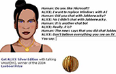

-
The Evolution of ChatBot
Chatbots are computer programs designed to simulate conversation with human users. They have been for quite some time, but have evolved significantly in recent years. Chatbots are now capable of engaging in meaningful, dynamic dialogues with users, thanks to the advancements in natural language processing and machine learning.
We will explore the history of chatbots and their evolution from simple FAQ to conversational AI. We will also discuss the main concepts involved in chatbots, such as NLP and conversational AI, and review relevant media coverage and research findings. Lastly, we will debunk some common misconceptions about chatbots.
From Simple FAQ to Conversational AI
News
-
14.4.2023 - Marketplace
Should you trust chatbots to give you financial advice? Both Google and OpenAI say their chatbots shouldn't be relied on for… -
13.4.2023 - Foxbusiness
‘Hey, I am a human.’ Artificial intelligence can’t close sales as well as people can, but that could change… -
13.4.2023 - Venturebeat
Mind your language: The risks of using AI-powered chatbots like ChatGPT in an organization…
-
History of ChatBot
The first-generation chatbots were developed in the early 2000s. These chatbots lacked true AI capabilities and offered scripted and robotic user experiences. They worked acceptably for simple FAQ content, but even at this stage, a new horizon of functionality was opening up: Chatbots could potentially do a lot more.
Second-generation chatbots emerged in the mid-2000s. These chatbots were designed to learn from user interactions and improve their responses over time. They used machine learning techniques to improve their accuracy and provide more personalized experiences.
Third-generation chatbots are the latest iteration of chatbot technology. They are designed to be unsupervised and context-aware. They can understand the intent behind user queries and engage in meaningful, dynamic dialogues.
- 
Components of ChatBot
Component Content 1 User Interface The operation of the chatbot begins when it receives the user's request. 2 User Message Analysis The User Interface Controller drives the user's request to find the user's intention. 3 Dialog Management Controls and updates the conversation context. It maintains the current intent and the identified entities to that point of the conversation. 4
Response Generation Produces responses using one or more of three available models: Rule-based, Retrieval based, and Generative-based models. 5 Backend The chatbot retrieves the information needed to fulfil the user's intent from the backend, either through external API calls or database requests. The Main Concepts Involved
Natural Language Processing (NLP) is a branch of artificial intelligence that focuses on the interaction between humans and computers using natural language. NLP enables chatbots to understand human language and generate responses that are natural and conversational.
Machine learning is a subfield of artificial intelligence that focuses on enabling machines to learn from data and improve their performance over time. Machine learning algorithms enable chatbots to learn from previous interactions and improve their responses over time.
Emotional analysis, also known as sentiment analysis, is a natural language processing technique that involves the identification and classification of words and phrases in text as positive, negative, or neutral.
Context awareness refers to a chatbot's ability to understand the context in which a user is communicating, such as the user's location, previous actions, and history of interactions.
Common Misconceptions
One common misconception about chatbots is that they will replace human workers. While it is true that chatbots can automate certain tasks, they are not a replacement for human workers. Chatbots are designed to work alongside humans, providing support and assistance where needed. They can handle simple and repetitive tasks, freeing up human workers to focus on more complex and creative work, which is beneficial for businesses that operate in different time zones or have customers all around the world.
Another misconception is that chatbots are perfect and can understand everything. While chatbots have come a long way in recent years, they are still limited in their ability to understand complex language and provide accurate responses. Chatbots rely on natural language processing (NLP) algorithms to understand user input and generate appropriate responses. However, NLP algorithms are not perfect and can struggle with complex sentence structures, idioms, and sarcasm. Chatbots are constantly learning and improving, but there is still room for improvement. To mitigate this issue, businesses can use a combination of chatbots and human customer service representatives to ensure that customers receive accurate and personalized support.
Contacts
Address:
School of Communication, Hong Kong Baptist University
Telephone: 3411 8154
Fax: 3411 7375
E-mail:
22452621@life.hkbu.edu.hk
22450254@life.hkbu.edu.hk
22413634@life.hkbu.edu.hkChatBot
LIU Ziyan & PAN Yijing & YANG Chongxiao